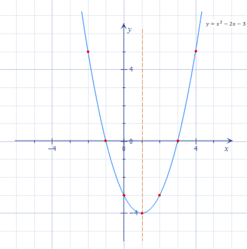

Означення квадратичної функції
Квадратична функція - функція, яку можна задати у вигляді y=ax^2+bx+c, де a,b,c — дійсні числа, при чому a≠0.
Свою назву ця функція отримала тому, що її аргумент знаходиться у другому степені (в квадраті). Подивимось на деякі із них:
y=3x^2−2, y=−0,2x^2; y=3−2x+2x^2/3
Щоб успішно працювати з квадратичною функцією, треба:
- навчитися записувати рівняння, що її задає, так, щоб його права частина являла собою квадратний тричлен у стандартному вигляді;
- навчитися чітко бачити, чому дорівнюють коефіцієнти a і b та вільний член c.
Наприклад:
Записати функцію y=3−2x+2x^2/3 у стандартному вигляді, та визначити значення a,b,c.
-
Почнемо із того, що запишимо праву частину в стандартному вигляді (розмістимо члени в порядку спадання степеня змінної x):
-
І, нарешті, перепишимо у вигляді:
-
Тепер явно видно, що
-
Виконуючи подібні завдання, не треба забувати, що можливі випадки, коли b=0, c=0. У випадку, коли b=0, c=0, a=1, отримуємо добре знайому нам функцію y=x^2.
y=2x^2/3−2x+3.
y=2/3x^2−2x+3 .
a=2/3, b=−2, c=3.
Графік квадратичної функції
Вигляд графіка
Графіком квадратичної функції є парабола. На мал.1 показано графіки декількох квадратичних функцій.
мал.1
З малюнка видно, що вершини парабол знаходяться у різних точках. Крім того, вітки параболи, що є графіком функції y=−x^2+3x−1 (показано чорним), напрямлені вниз, а решти — вгору. А ще важливими є точки, у яких графік функції перетинає координатні осі.
Напрям віток параболи
Напрям віток графіка функції y=ax2+bx+c визначається за значенням коефіцієнта a. Вітки параболи напрямлені вгору, якщо a>0, і вниз, коли a<0.
Напрям віток параболи визначаємо за коефіцієнтом a:
- якщо a>0 — вітки напрямлені вгору;
- якщо a<0 — вітки напрямлені вниз.
Координати вершини параболи
Щоб побудувати графік квадратичної функції, потрібно уміти визначати координати точки, в якій знаходиться вершина параболи, що є цим графіком. Нехай вершина даної параболи знаходиться у точці з координатами (m;n). Координату m визначають за формулою:
m=−b/2a
Координату n зручно шукати, підставивши знайдене число m у рівняння функції за значення аргументу, тобто n=am^2+bm+c. Можна скористатися і формулою
n=−b^2−4ac/4a
Координати (m;n) вершини параболи знаходимо за формулами:
- m=−b/2a
- n=am^2+bm+c або n=−b^2−4ac/4a
Координати точок перетину параболи з осями координат
Точка перетину з віссю Oy
Точка перетину графіка квадратичної функції y=ax^2+bx+c з віссю ординат Oy має координати (0;c).
Така точка для будь-якої квадратичної функції завжди лише одна.
Точки перетину з віссю Ox
Якщо графік функції y=ax^2+bx+c перетинає вісь абсцис, то точки перетину мають координати (x1;0) і (x2;0), де x1, x2 – корені тричлена ax^2+bx+c
Графік квадратичної функції може не мати взагалі точок перетину з віссю Ox, може мати дві такі точки, або тільки одну спільну точку з цією віссю. Розберемо кожний із випадків.
Парабола не перетинає вісь абсцис, коли виконується хоча б одна із умов:
- дискримінант квадратного тричлена ax^2+bx+c, що задає функцію, — від'ємний (D<0);
- вітки параболи напрямлені вгору (a>0) і ордината її вершини – додатна (n>0);
- вітки параболи напрямлені вниз (a<0) і ордината її вершини – від'ємна (n<0).
Якщо парабола має з віссю Ox тільки одну спільну точку, то це означає, що вершина параболи знаходиться на осі абсцис.
Вершина параболи лежить на осі абсцис, коли:
- дискримінант квадратного тричлена ax^2+bx+c, що задає функцію,дорівнює нулю (D=0);
- ордината вершини параболи дорівнює нулю (n=0).
І, накінець, в усіх інших випадках парабола перетинає вісь Ox у двох точках. Найчастіше про це свідчить те, що дискримінант тричлена, що задає квадратичну функцію, – додатне число (D>0).
Побудова графіка квадратичної функції
Steps
Для того, щоб побудувати графік функції y=ax^2+bx+c, зручно скористатися послідовністю кроків, представленою на схемі:
Послідовність кроків при побудові графіка квадратичної функції
- визначити напрям віток параболи;
- знайти координати вершини параболи (m;n);
- знайти ординату перетину з віссю Oy;
- відкласти точку, симетричну їй відносно прямої x=m;
- знайти абсциси точок перетину з віссю Ox;
- за потреби, скласти таблицю значень для визначення ще декількох точок.
Користуючись даною схемою, можна побудувати ескіз графіка. Чим більше додаткових точок визначимо у останньому пункті, тим точніший ескіз отримаємо.
Приклади побудови графіків квадратичних функцій
Example:
Побудувати графік функції y=x^2−2x−3
- Визначимо напрямок віток параболи. У рівнянні даної функції a=1, отже вітки її графіка напрямлені вгору.
- Визначимо координати вершини параболи: m=2/2⋅1=1; n=1^2−2⋅1−3=−4.
Маємо, що вершина знаходиться у точці (1;−4). Позначимо її на координатній площині, і проведемо пряму x=1:
мал.2 - Вершина параболи знаходиться у точці (1;−4), провели пряму x=1
- Ордината перетину графіка з віссю Oy дорівнює вільному члену c рівняння функції. У нашому випадку c=−3. Позначимо точку (0;−3), і точку, симетричну їй відносно прямої x=m, тобто (2;−3):
мал.3 - Точка перетину графіка з віссю Oy, та симетрична їй відносно прямоїx=1
Знайдемо абсциси точок перетину графіка з віссю Ox з умови
ax^2+bx+c=0 :
x^2−2x−3=0. За теоремою, оберненою до теореми Вієта, маємо:
x1=−1, x2=3.
Отже, точки перетину параболи з віссю Ox мають координати (−1;0) і (3;0). Відкладемо їх:
мал.4 - Тепер і точки перетину з віссю Ox.
Візьмемо ще пару точок. Побудємо для цього таблицю значень:
| x | -2 | 4 |
|---|---|---|
| y | 5 | 5 |
і відкладемо точки із зазаначеними у таблиці координатами:
Мал. 5 - Ще більше точок!
І, на кінець, сполучаємо точки плавною лінією і не забуваємо підписати графік:
